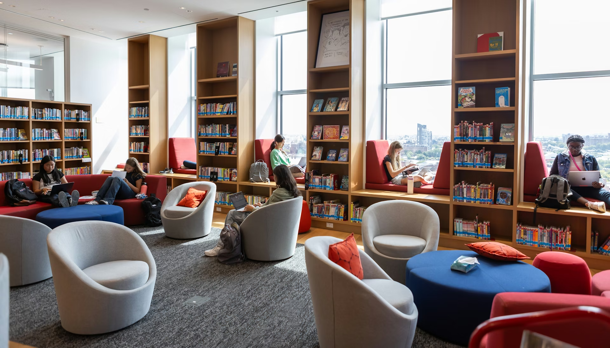

Koleksi Lengkap
Buku dan referensi dari berbagai bidang ilmu.
GERBANG ILMU, JENDELA MASA DEPAN
Akses koleksi buku, jurnal, dan sumber referensi untuk mendukung proses belajar, penelitian, dan pengembangan diri.

Buku dan referensi dari berbagai bidang ilmu.
Mahasiswa, dosen, dan tenaga kependidikan.
Pendaftaran online dan informasi perpustakaan.
Fasilitas untuk membaca, belajar, dan berdiskusi.
Perpustakaan Universitas menyediakan sumber bacaan bagi mahasiswa, dosen, dan tenaga kependidikan. LibReg membantu pendaftaran anggota tanpa formulir kertas.
Baca selengkapnya